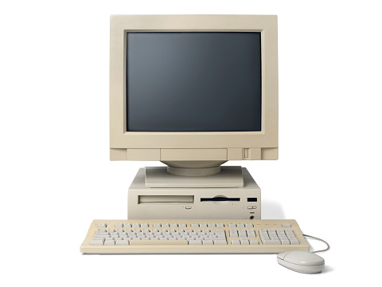

Teknik för de nyfikna
Vad är teknologi i teknik? Teknologi är kunskapen om och användandet av verktyg, teknik, hantverk, system eller organisationsmetoder. Teknologi kan definieras som 'läran om tekniken', alltså det som man sysslar med inom forskning och undervisning. Teknik däremot är den praktiska tillämpningen.
Datateknik är teknologier för utveckling av datorers programvara och maskinvara.
Lite musik medans du läser?